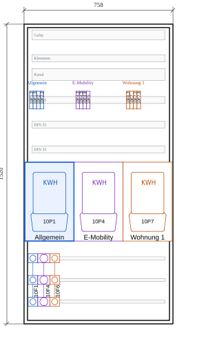
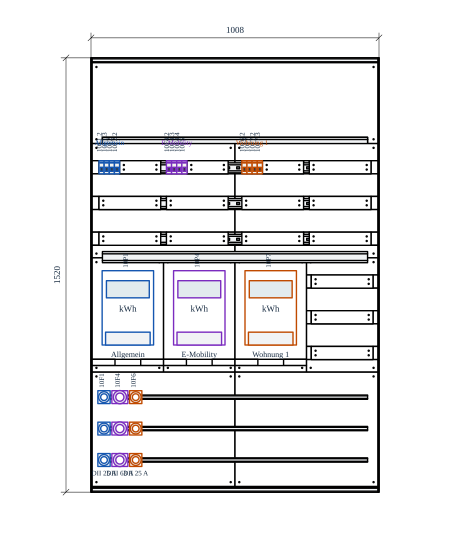

AUFTRÄGE
Bestätigen. Organisieren. Loslegen.
Übernimm die genehmigte Offerte, lade die Auftragsbestätigung herunter und verfolge, welches Kundenmaterial noch fehlt.
DEINE BASIS IM SCHALTANLAGENBAU
Kalkuliere die Offerte und übernimm sie bei Zusage als Auftrag. Im integrierten Web-CAD zeichnest du das Schema und erzeugst daraus die Dispo. Welche Artikel für den Auftrag abgebucht wurden, siehst du im Lager.
OFFERTE AN-00104 · MUSTER AG
| Position | Menge × Ansatz | Betrag CHF |
|---|---|---|
| Wandschrank 800 × 600 × 250 mm | 1 × 680.00 | 680.00 |
| FI/LS 1P+N B13 · 30 mA | 2 × 64.00 | 128.00 |
| FI/LS 3P+N C16 · 30 mA | 1 × 185.00 | 185.00 |
| LS 1P B13 | 6 × 14.00 | 84.00 |
| LS 3P C16 | 2 × 42.00 | 84.00 |
| Montage | 2 h × 95.00 | 190.00 |
AUFTRAG AU-00028


LAGER / ABGEBUCHTE AUFTRÄGE
BÜRO UND PLANUNG
Aus der bestätigten Offerte übernimmt SchaltBase Kunde und Positionen in den Auftrag. Im CAD dienen die gezeichneten Geräte als Grundlage für den Aufbau.
AUFTRÄGE
Übernimm die genehmigte Offerte, lade die Auftragsbestätigung herunter und verfolge, welches Kundenmaterial noch fehlt.
WEB-CAD
Zeichne Zähler und Abgänge im Browser. Vergleiche Aufbauvarianten und übernimm die passende Dispo. Die Zählerplätze kannst du danach im Rahmen tauschen.
Der richtige Moment zählt: Die Offerte zeigt den aktuellen Bestand. Erst «Auftrag erstellen» löst die Abbuchung aus. Fehlmengen bleiben sichtbar; die ursprüngliche Offerte bleibt erhalten. Lagerbuchung im Clip ansehen
SCHAU DEINEN WERKZEUGEN BEI DER ARBEIT ZU
Ein Musterprojekt, verständliche Schritte. Die Clips starten automatisch. Wähle ein Werkzeug, pausiere den Ablauf oder springe direkt zum gewünschten Schritt.
OFFERTE AN-00104 · MUSTER AG
| Position | Menge × Ansatz | Betrag CHF |
|---|---|---|
| Wandschrank 800 × 600 × 250 mm | 1 × 680.00 | 680.00 |
| FI/LS 1P+N B13 · 30 mA | 2 × 64.00 | 128.00 |
| FI/LS 3P+N C16 · 30 mA | 1 × 185.00 | 185.00 |
| LS 1P B13 | 6 × 14.00 | 84.00 |
| LS 3P C16 | 2 × 42.00 | 84.00 |
| Montage | 2 h × 95.00 | 190.00 |
AUFTRAG AU-00028
LAGER / ABGEBUCHTE AUFTRÄGE
AUFTRAG / ANGELIEFERTES MATERIAL
AUFTRAG / ANGELIEFERTES MATERIAL
Alle vorgesehenen Kundenpositionen sind eingetroffen.
LAGER / ARTIKELBESTAND
ZUSCHNITTBEISPIEL · SBR & AUFBAU
Schienen aus der Offerte direkt übernehmen.
LAGER / ZUSCHNITT ZUM AUFTRAG
Stange 1 · drei Zuschnitte
Stange 2 · ein Zuschnitt
LAGER / ABGEBUCHTE AUFTRÄGE





Die beiden Zähler tauschen ihre Position.

OFFERTE AN-00104 · MUSTER AG
| Position | Menge × Ansatz | Betrag CHF |
|---|---|---|
| Wandschrank 800 × 600 × 250 mm | 1 × 680.00 | 680.00 |
| FI/LS 1P+N B13 · 30 mA | 2 × 64.00 | 128.00 |
| FI/LS 3P+N C16 · 30 mA | 1 × 185.00 | 185.00 |
| LS 1P B13 | 6 × 14.00 | 84.00 |
| LS 3P C16 | 2 × 42.00 | 84.00 |
| Montage | 2 h × 95.00 | 190.00 |
Berechtigte Mitarbeitende können gemeinsam weiterarbeiten.
Offerte
Anlagen, Material und Arbeitszeit kalkulieren. Offerten zentral für den Betrieb speichern und für den nächsten Schritt ausgeben.
Offerte im Detail kennenlernenAnimierte Produktbeispiele mit fiktiven Artikeln, Musterpreisen und Zeichnungen aus dem CAD-Werkzeug. Keine Kundenprojekte. Schnittbreite und Artikelzuordnung werden im eigenen Betrieb hinterlegt.
WISSEN GRIFFBEREIT. ARBEIT IM FLUSS.
Berechnen, nachschlagen und dokumentieren. Die Helfer für deinen Arbeitsalltag – mit gemeinsamen Vorlagen für deinen Betrieb.
| Schiene | Abzug | Länge |
|---|---|---|
| DIN | 15 mm | 785 mm |
| Galip | 30 mm | 770 mm |
| Eigene Schiene | Abzug | Länge |
|---|---|---|
| Profil A | 65 mm | 735 mm |
| Profil B | 30 mm | 770 mm |
Eigene Schienen und Abzüge je Tiefe.
Schienenrechner
Je Verteilungstiefe die passenden Schienen mit euren Abzügen. Stückzahlen ergänzen, Liste drucken oder als CSV exportieren.
Funktionen entdeckenEW-Vorschriften
EW auswählen, hinterlegte PDFs öffnen und firmeneigene Unterlagen ergänzen. Alles an einem Ort für die Werkstatt.
Funktionen entdeckenEigene Unterlagen ergänzen und im Betrieb teilen.
Aufbauabstände
Technische Zeichnungen und Aufbauabstände nachschlagen. Eigene Zeichnungen im Betrieb zur Verfügung stellen.
Funktionen entdecken| Anwendung | Leiterfarbe |
|---|---|
| Steuerung | Firmeneintrag |
| Versorgung | Firmeneintrag |
| Signalisierung | Firmeneintrag |
Mitarbeitende sehen die Farben und Angaben ihrer Firma.
Drahtfarben
Anwendungen, Querschnitte und Leiterfarben übersichtlich nachschlagen. Firmenvorgaben zentral anpassen.
Funktionen entdeckenTechnische Tabellen
Strombelastbarkeit für Litzen und Kupferschienen sowie Schienenlängen und Platzeinheiten für ABB Smissline.
LAGER / ARTIKELBESTAND
LAGER / ABGEBUCHTE AUFTRÄGE
Lagerverwaltung
Geräte, Platten und Schienen verwalten. Mit optionalen Lagerplätzen, nachvollziehbaren Auftragsbuchungen und Reststücken aus dem Zuschnitt.
Funktionen entdeckenTechnische Tabellen und Beispieldarstellungen unterstützen die Arbeit. Die aktuellen Vorschriften, Herstellerangaben und die fachgerechte Auslegung bleiben massgebend.
DEINE FIRMA. DEINE ABLÄUFE.
Planung, Werkstatt und Büro arbeiten mit denselben Vorlagen, Unterlagen und Betriebsdaten. Über persönliche Konten und passende Berechtigungen legst du fest, wer welche Werkzeuge nutzen und Inhalte bearbeiten darf.
JEDES WERKZEUG IM DETAIL
Kontakt
In einer persönlichen Demo zeigen wir dir, wie du eine Offerte erstellst und im Web-CAD vom Schema zur Dispo kommst. Dabei ist auch Platz für deine Fragen.
Persönliche Demo anfragenDu hast eine andere Frage? Schreib uns an Info@schaltbase.ch.